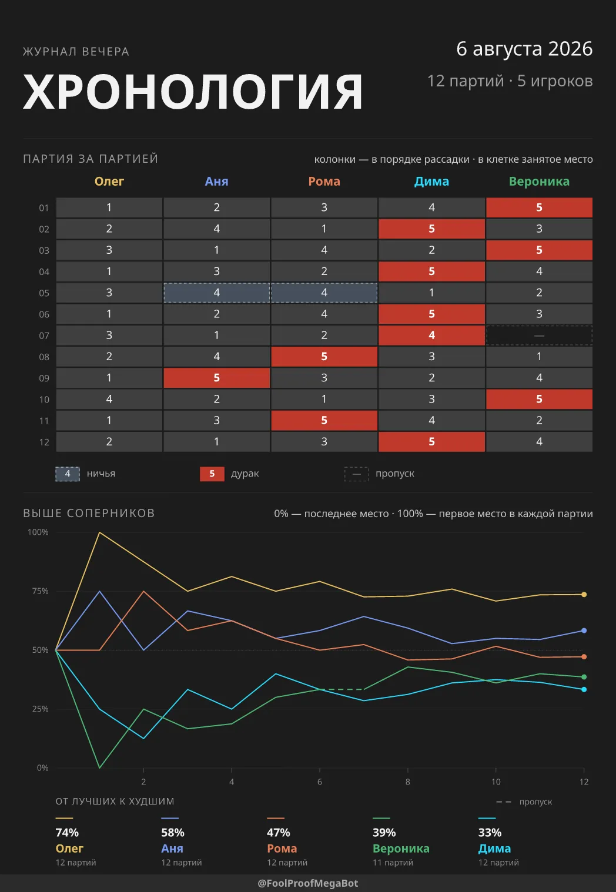
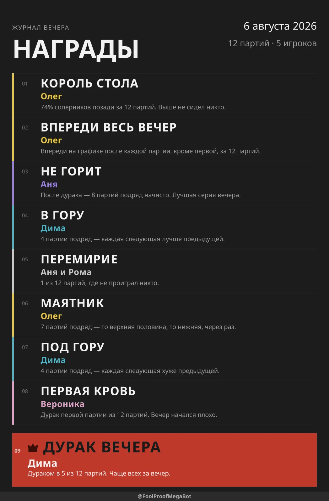
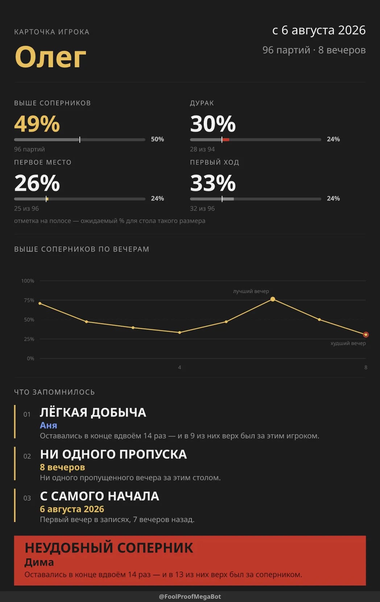

Телеграм-бот · подкидной дурак · бесплатно
Вы играете. Счёт ведёт FoolProof.
Добавьте бота в чат, где собирается ваша компания. Состав присылается один раз, дальше — одно нажатие, когда кто-то вышел из партии. К концу вечера бот возвращает всё сыгранное двумя постерами, а карьеру любого игрока — третьим.
Без регистрации · ничего не устанавливать · читает только команды и ответы на свои сообщения
Партия 3
Ходит первым: Олег
Вечер от начала до конца
Три действия, и повторяется только одно
-
Шаг 1
Отправьте состав
/game Олег, Аня, Рома— порядок имён это рассадка за столом, по часовой стрелке. Бот открывает в чате одну карточку. -
Шаг 2
Отмечайте, кто вышел
Нажатие на имя — в том порядке, в каком игроки выходят, — затем «Записать». Кто остался без отметки, тот и дурак. Печатать ничего не нужно.
-
Шаг 3
Спросите, как всё прошло
/statsрисует хронологию, а с пятой партии — ещё и награды./personalрисует одного игрока за все вечера, что он сыграл./nextоткрывает тот же стол заново: первым ходит сосед дурака.
Что рисует бот
Нарисованное, а не перечисленное
Все три картинки бот рисует сам — с таким запасом, чтобы они читались через стол даже после того, как Телеграм их пережмёт.



Почему он такой
Сделан под вечер пятницы
-
Нажатия, а не текст
Счёт ведётся с телефона, одной рукой, между раздачами. Поэтому весь продукт — одно сообщение с клавиатурой под ним.
-
Остального он не читает
В обычном режиме приватности бот получает только команды и ответы на свои же сообщения. Ваш разговор до него не доходит.
-
Перезапуск ничего не стоит
Карточка каждый раз собирается заново из записанного, поэтому падение или деплой посреди партии вечеру не вредит.
-
Один игрок под двумя именами
Кто-то напишет Аня, а потом весь вечер Анна.
/mergeснова делает из них одного человека. -
Русский или английский
/languageвыбирает язык для чата — включая слова на постерах. -
От двух до десяти за столом
/next_withи/next_withoutменяют состав, когда кто-то пришёл или ушёл домой.
Прежде чем добавить
Вопросы
- Это бесплатно?
- Да. Ни регистрации, ни рекламы, ни платных функций.
- Он читает нашу переписку?
- Нет. В обычном режиме приватности бот получает только команды и ответы на свои же сообщения. Остальной разговор до него не доходит.
- Что он хранит?
- Имена, которые вы ему отправили, результаты партий, сыгранных в этом чате, и выбранный этим чатом язык. Больше ничего.
- В какого дурака он умеет?
- В подкидного, от двух до десяти игроков. Он записывает порядок выхода и дурака, но не раздаёт карты и не судит игру.
- Нужно что-то устанавливать?
-
Нет. Добавьте бота в группу и отправьте
/gameс именами. - Можно поднять свою копию?
- Да, весь бот открыт под лицензией MIT — нужен Node 24, шага сборки нет.
В пятницу снова сядете за стол.
Пусть в этот раз счёт запишется сам. Добавить бота — одно нажатие, а напечатать за весь вечер придётся только первый состав.